#Parameters
p <- .3 # the probability of a success
#Generating 10 random values
rbinom(10, size=1, prob=p) [1] 0 0 0 0 0 0 0 0 0 0Like the flip of a fair or unfair coin. X=1 if the coin comes up heads, 0 on tails.
#Parameters
p <- .3 # the probability of a success
#Generating 10 random values
rbinom(10, size=1, prob=p) [1] 0 0 0 0 0 0 0 0 0 0Expected value is \[\sum_k k\cdot Pr[X=k]\]
#All possible values
k <- 0:1
#Associated probabilities
Pr <- dbinom(k, size=1, prob=p)
#expectation
sum(k*Pr)[1] 0.3The expected value is \(p\) and the variance is \(p(1-p)\)
bernoulli.sim <- rbinom(100, size=1, prob=p)
# Expectation
p[1] 0.3# from sample
mean(bernoulli.sim)[1] 0.41# Variance
p*(1-p)[1] 0.21#from sample
var(bernoulli.sim)[1] 0.2443434Like flipping a fair (or unfair) coin \(n\) times, counting the number of heads.
#Parameters
n <- 8 #the number of flips / attempts
p <- .4 #the probability of success
#Generate 10 random values
rbinom(10, size=n, prob=p) [1] 4 2 2 2 5 1 3 3 5 3#Calculate P(X=3)
dbinom(x=3, size=n, prob=p)[1] 0.2786918choose(n, 3)*p^3*(1-p)^(n-3)[1] 0.2786918#Calculate all probabilities
dbinom(x=0:8, size=n, prob=p)[1] 0.01679616 0.08957952 0.20901888 0.27869184 0.23224320 0.12386304 0.04128768
[8] 0.00786432 0.00065536sum(dbinom(x=0:8, size=n, prob=p))[1] 1#Calculate P(X <= 3)
pbinom(q=3, size=n, prob=p)[1] 0.5940864Visualize the binomial probability mass function:
k <- 0:8
pk <- dbinom(x=0:8, size=n, prob=p)
barplot(height=pk, names=k, main=paste0("pmf of Binom(",n,",",p,")"))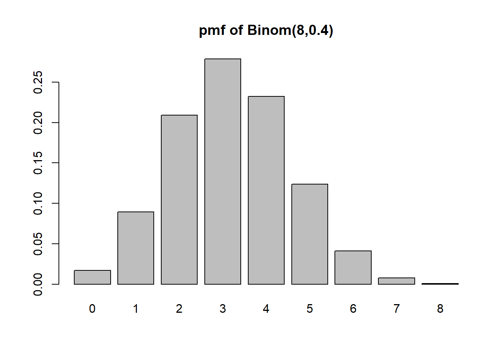
Expected value is \[\sum_k k\cdot Pr[X=k]\]
#All possible values
k <- 0:n
#Associated probabilities
Pr <- dbinom(k, size=n, prob=p)
#expectation
sum(k*Pr)[1] 3.2n*p[1] 3.2The probability mass function
barplot(Pr, names=k, main="Probability Mass Function of Binomial(8,.4)")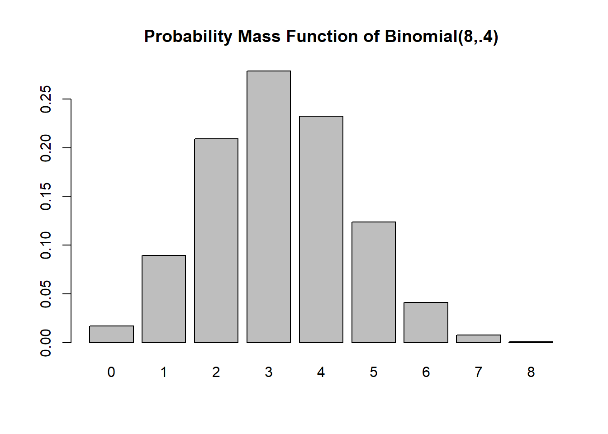
The cumulative distribution function
x <- 0:8
cdfx <- pbinom(x, size=n,prob=.4)
plot(x, cdfx, type="s", main="Cumulative Distribution Function of Binomial(8,.4)", ylim=c(0,1))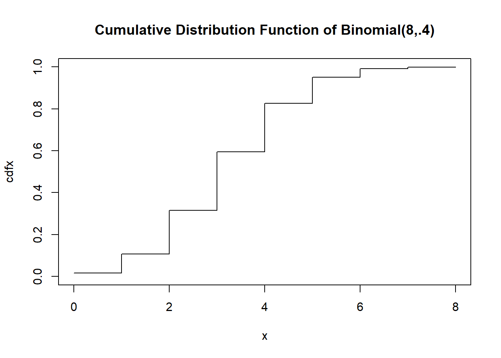
The expected value is \(np\) and the variance is \(np(1-p)\)
binomial.sim <- rbinom(10000, size=n, prob=p)
# Expectation
n*p[1] 3.2# from sample
mean(binomial.sim)[1] 3.2226# Variance
n*p*(1-p)[1] 1.92#from sample
var(binomial.sim)[1] 1.944244Counting how many tails before the first head; the number of failures before the first success (independent trials, probability of success remains constant)
#Parameters
p <- .4 #The probability of success on each trial
#Generate 10 random values
rgeom(10, prob=p) [1] 0 0 2 0 0 2 1 0 0 4The probability mass function…. only going out to 20, but the support is infinite!
k <- 0:20
Pr <- dgeom(k, prob=p)
barplot(Pr, names=k, main="Probability Mass Function of Geom(.4)")
The cumulative distribution function
cdfx <- cumsum(Pr)
# if you want it to look really proper
n <- length(k)
plot(x = NA, y = NA, pch = NA,
xlim = c(0, max(k)),
ylim = c(0, 1),
ylab = "Cumulative Probability",
main = "Cumulative Distribution Function of Geom(.4)")
points(x = k[-n], y = cdfx[-n], pch=19)
points(x = k[-1], y = cdfx[-n], pch=1)
for(i in 1:(n-1)) points(x=k[i+0:1], y=cdfx[c(i,i)], type="l")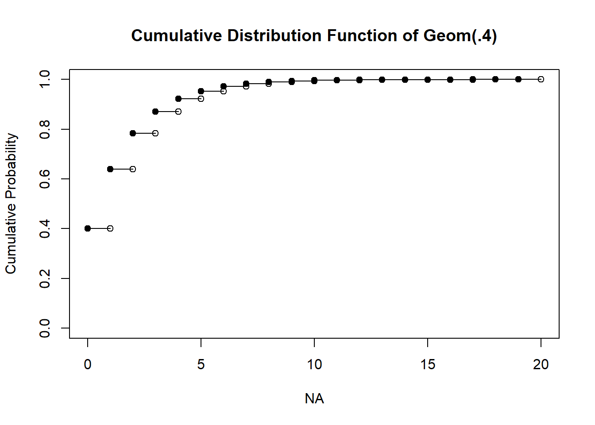
To calculate probabilities from a geometric rv, use the pgeom function
#Pr(X <= 3)
pgeom(3, prob=p)[1] 0.8704To get individual probabilities at k
#Pr(X=3)
dgeom(3, prob=p)[1] 0.0864But it’s probably faster to just use a step type plot. The vertical lines are not technically part of the plot though.
plot(k, cdfx, type="s", main="Cumulative Distribution Function of Geom(.4)", ylim=c(0,1))
points(k, cdfx, pch = 16, col = "blue")
You can get the cumulative probabilities from the pgeom function
plot(k, pgeom(k, prob=.4), type="s", main="Cumulative Distribution Function of Geom(.4)", ylim=c(0,1))
points(k, cdfx, pch = 16, col = "blue")
The expected value is \(\dfrac{1-p}{p}\) and the variance is \(\dfrac{1-p}{p^2}\)
geom.sim <- rgeom(10000, prob=p)
# Expectation
(1-p)/p[1] 1.5# from sample
mean(geom.sim)[1] 1.5139# Variance
(1-p)/(p^2)[1] 3.75#from sample
var(geom.sim)[1] 3.816588Like the number of times something occurs during a fixed time window
#Parameters
l <- 10.5 #The rate parameter, average occurrences per unit time
#It is lambda, but I'll call it "l"
#Generate 10 random values
rpois(10, lambda=l) [1] 15 9 9 7 12 2 11 13 15 8PMF and CDF
par(mfrow=c(1,2))
k <- 0:20
Pr <- dpois(k,l)
barplot(Pr, names=k, main="PMF of Pois(3)")
plot(k, ppois(k, l), type="s", main="CDF of Pois(3)", ylim=c(0,1))
points(k, ppois(k, l), pch = 16, col = "blue")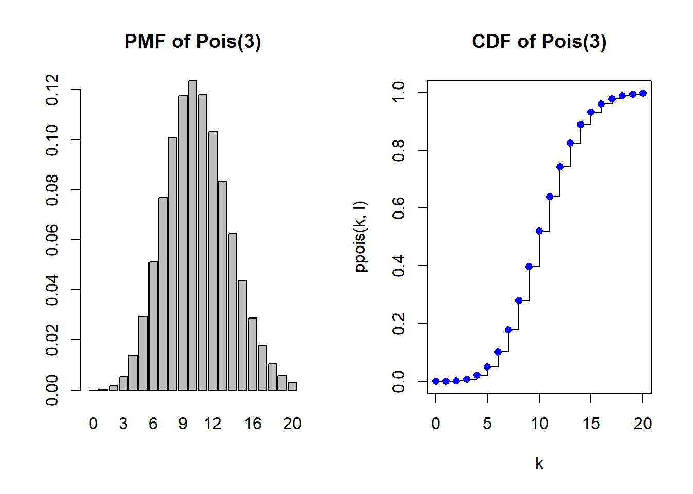
The expected value and variance are both is \(\lambda\)
pois.sim <- rpois(10000, lambda=l)
# Expectation & Variance
l[1] 10.5# mean from sample
mean(pois.sim)[1] 10.4769#variance from sample
var(pois.sim)[1] 10.3717Like rolling a fair die
#Parameters
a <- 1 #lower bound, inclusive
b <- 6 #upper bound, inclusive
#Generate 10 random values
sample(a:b, 10, replace=TRUE) #replace=TRUE is important [1] 4 5 6 5 6 5 6 4 5 3The PMF and CDF
par(mfrow=c(1,2))
k <- a:b
Pr <- rep(1/(b-a+1), length(k))
barplot(Pr, names=k, main="PMF of Unif(1,6)")
plot(k, cumsum(Pr), type="s", main="CDF of Unif(1,6)", ylim=c(0,1))
points(k, cumsum(Pr), pch = 16, col = "blue")
The backbone of random variable generation - for example a random decimal between 0 and 1
# Parameters
a <- 0 #lower bound
b <- 1 #upper bound
#generate 10 random values
runif(10, min=a, max=b) [1] 0.52963805 0.08970949 0.52608448 0.54468507 0.18395503 0.59985894
[7] 0.32074492 0.72657246 0.15841019 0.27628589Probability density function and cumulative distribution function
par(mfrow=c(1,2))
x <- seq(a,b, length.out=100)
plot(x, dunif(x, a, b), type="l", main="PDF of Unif(0,1)", ylab="density", ylim=c(0,1))
plot(x, punif(x, a, b), type="l", main="CDF of Unif(0,1)", ylab="F(x)")
The expected value is \(\frac{a+b}{2}\) and the variance is \(\frac{(b-a)^2}{12}\)
unif.sim <- runif(10000, min=a, max=b)
# Expectation
(a+b)/2[1] 0.5# mean from sample
mean(unif.sim)[1] 0.4980915#variance
(b-a)^2/12[1] 0.08333333#variance from sample
var(unif.sim)[1] 0.08392641Many things in the world are normally distributed - useful for modeling when the distribution is symmetric and probability is densest in the middle with decreasing tails.
#Parameters
mu <- 5 #the mean/location of the distribution
sigma2 <- 4 #the variance is in squared units!!
sigma <- sqrt(sigma2) #sigma is the standard deviation, not the variance
#generate 10 random values
rnorm(10, mean=mu, sd=sigma) [1] 6.664467 4.840294 6.804455 5.551665 2.327922 8.329978 8.653934 4.198955
[9] 6.353550 2.628735Probability density function and cumulative distribution function
par(mfrow=c(1,2))
x <- seq(mu-3*sigma, mu+3*sigma, length.out=100)
plot(x, dnorm(x, mu, sigma), type="l", main="PDF of Normal(5, 2^2)", ylab="density")
plot(x, pnorm(x, mu, sigma), type="l", main="CDF of Normal(5, 2^2)", ylab="F(x)")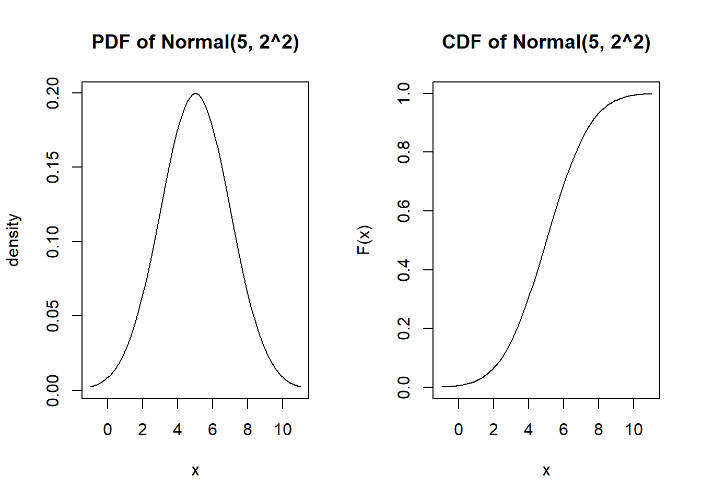
Approximate the expected value numerically
\[\int_{-\infty}^\infty t f(t) dt\]
mu <- 15
sigma <- 4
t <- seq(mu-4*sigma, mu+4*sigma, length.out=1000)
d <- dnorm(t, mean=mu, sd=sigma)
w <- t[2]-t[1]
head(t)[1] -1.0000000 -0.9679680 -0.9359359 -0.9039039 -0.8718719 -0.8398398head(d)[1] 3.345756e-05 3.454551e-05 3.566656e-05 3.682162e-05 3.801165e-05
[6] 3.923763e-05#Expected value
sum( t * (d*w))[1] 14.99907The expected value is \(\mu\) and the variance is \(\sigma^2\)
normal.sim <- rnorm(10000, mean=mu, sd=sigma)
# Expectation
mu[1] 15# mean from sample
mean(normal.sim)[1] 15.0182#variance
sigma2[1] 4#variance from sample
var(normal.sim)[1] 16.35384normal.sim <- rnorm(1000000)
x <- .25 <= normal.sim & normal.sim <=.75
sum(x)/1000000[1] 0.174634pnorm(.75)-pnorm(.25)[1] 0.1746663# X1 ~ Normal(1,1^2)
x1 <- rnorm(10000, mean=1, sd=1)
#X2 ~ Normal(2, 2^2)
x2 <- rnorm(10000, mean=2, sd=2)
par(mfrow=c(1,2))
hist(x1)
hist(x2)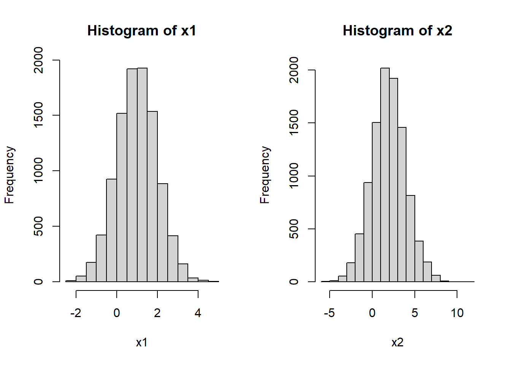
Let’s check the variances individually
var(x1)[1] 0.9836894var(x2)[1] 4.047221In theory, Var(X1+X2) = Var(X1) + Var(X2) We check with sample variance
var(x1+x2)[1] 5.08567var(x1)+var(x2)[1] 5.03091var(x1)+var(x2)+2*cov(x1,x2)[1] 5.08567Look at the plot of these two variables
mean(x1+x2)[1] 2.922653mean(x1)+mean(x2)[1] 2.922653plot(x1,x2)
hist(x1+x2, breaks=50)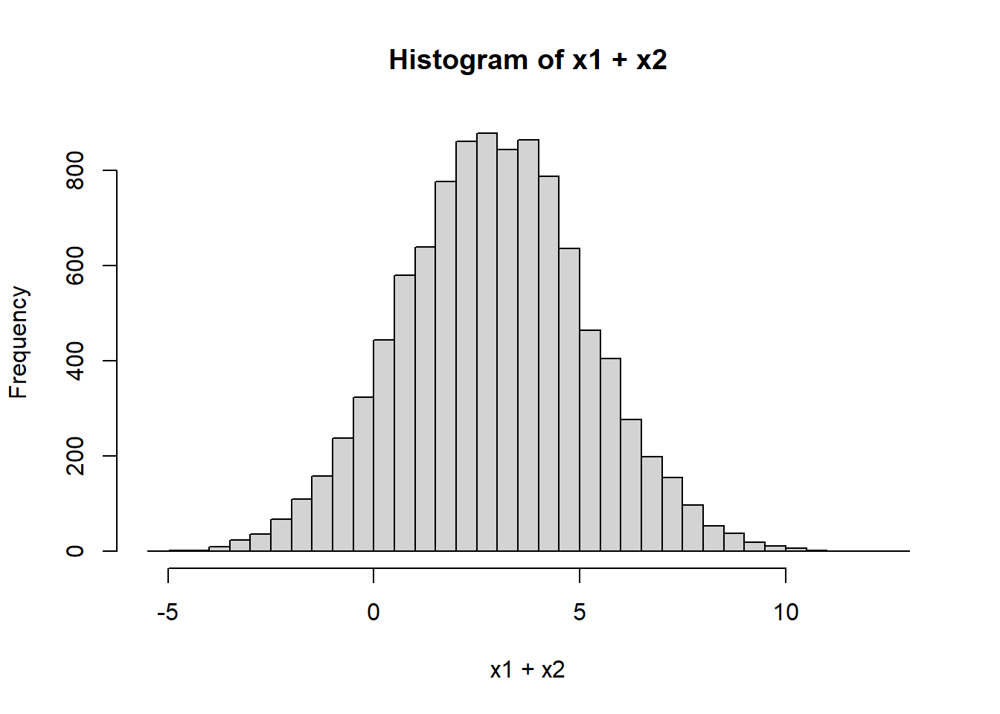
X <- runif(100000, 0, 1)
hist(X)
Y <- runif(100000, 0, 1)
hist(Y)
hist(X+Y)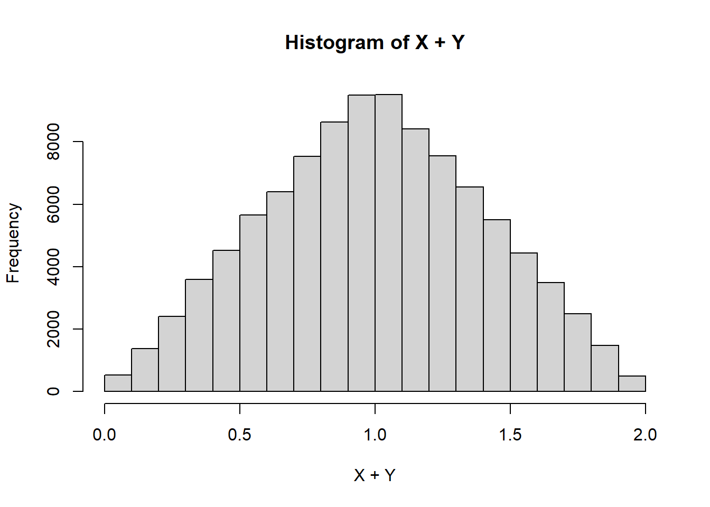
Z <- runif(100000, 0, 1)
hist(X+Y+Z, breaks=100)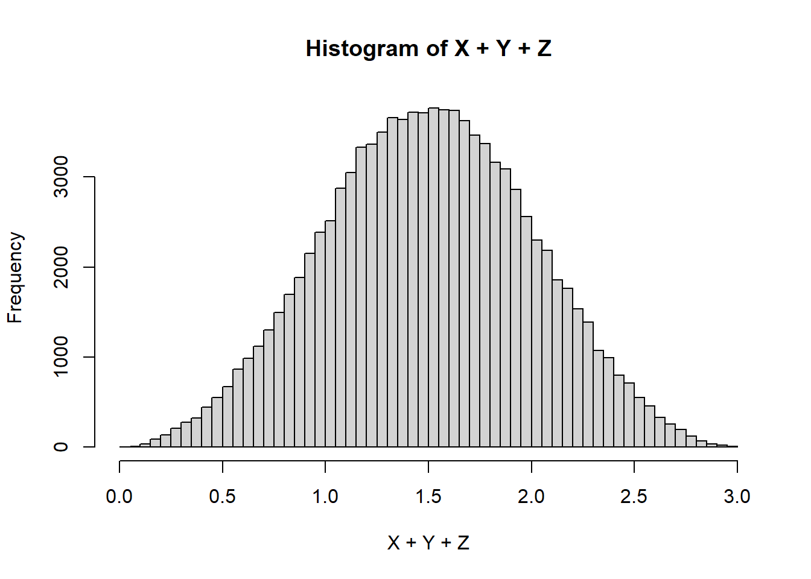
Let’s consider a geometric that counts the number of days before a electronic component malfunctions Suppose that every day there’s a 25% chance of malfunction.
p=.25
random.geom <- rgeom(10000, prob=p)
hist(random.geom, breaks=25)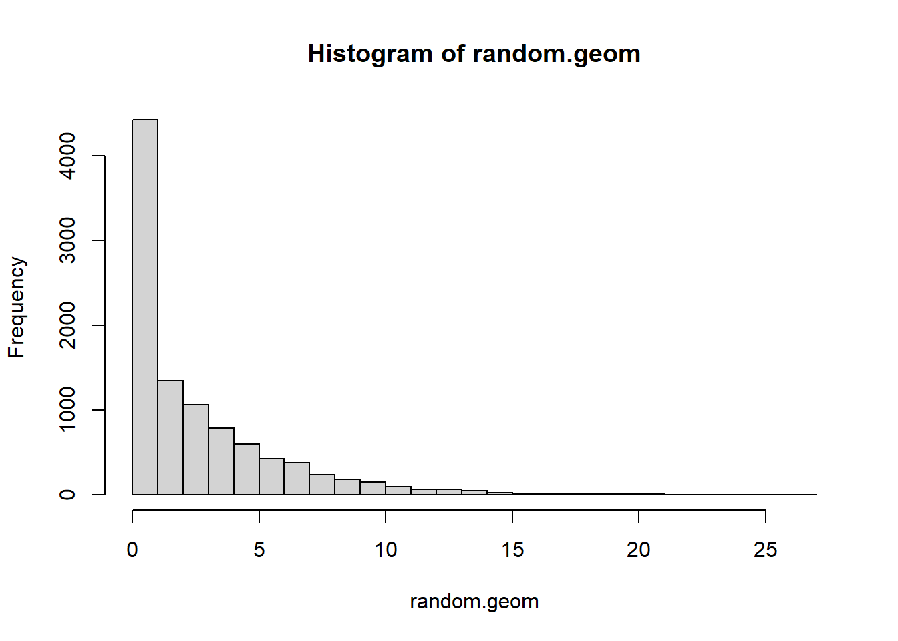
What if more than one malfunction could happen per day? Like we replace the part immediately when it malfunctions. We could divide the day into \(N\) parts and use a geometric for each part of the day. If \(X\)=k, then the proportion of the day it took to break is \(k/N\) Let’s start with \(N\)=2 and go up from there
par (mfrow=c(2,2))
N <- 2
geom.sim <- rgeom(10000, p/N) / N
hist(geom.sim, breaks=100)
mean(geom.sim)[1] 3.46095N <- 6
geom.sim <- rgeom(10000, p/N) / N
hist(geom.sim, breaks=100)
mean(geom.sim)[1] 3.8349N <- 24
geom.sim <- rgeom(10000, p/N) / N
hist(geom.sim, breaks=100)
mean(geom.sim)[1] 3.911383N <- 100
geom.sim <- rgeom(10000, p/N) / N
hist(geom.sim, breaks=100)
mean(geom.sim)[1] 3.976093For modeling waiting times - the length of time until an event occurs. It’s a continuous version of a geometric, if you start looking at smaller and smaller time units (e.g. days -> hours -> minutes -> seconds)
#Parameters
l <- 3 #The rate parameter, the average number of occurrences per unit time
#Generate 10 random values
rexp(10, rate=l) [1] 0.25430117 0.04183918 0.29319406 0.43118834 0.09191866 0.91161940
[7] 0.16428740 0.27618435 0.48689455 0.52563103Probability density function and cumulative distribution function
par(mfrow=c(1,2))
x <- seq(0, 6/l, length.out=100)
plot(x, dexp(x, l), type="l", main="PDF of Exp(3)", ylab="density")
plot(x, pexp(x, l), type="l", main="CDF of Exp(3)", ylab="F(x)")
The expected value is \(\dfrac{1}{\lambda}\) and the variance is \(\frac{1}{\lambda^2}\)
exp.sim <- rexp(10000, l)
# Expectation
1/l[1] 0.3333333# mean from sample
mean(exp.sim)[1] 0.3380446#variance
1/l^2[1] 0.1111111#variance from sample
var(exp.sim)[1] 0.11542lambda = 10
simulated.exp <- rexp(10000, rate=10)
hist(simulated.exp)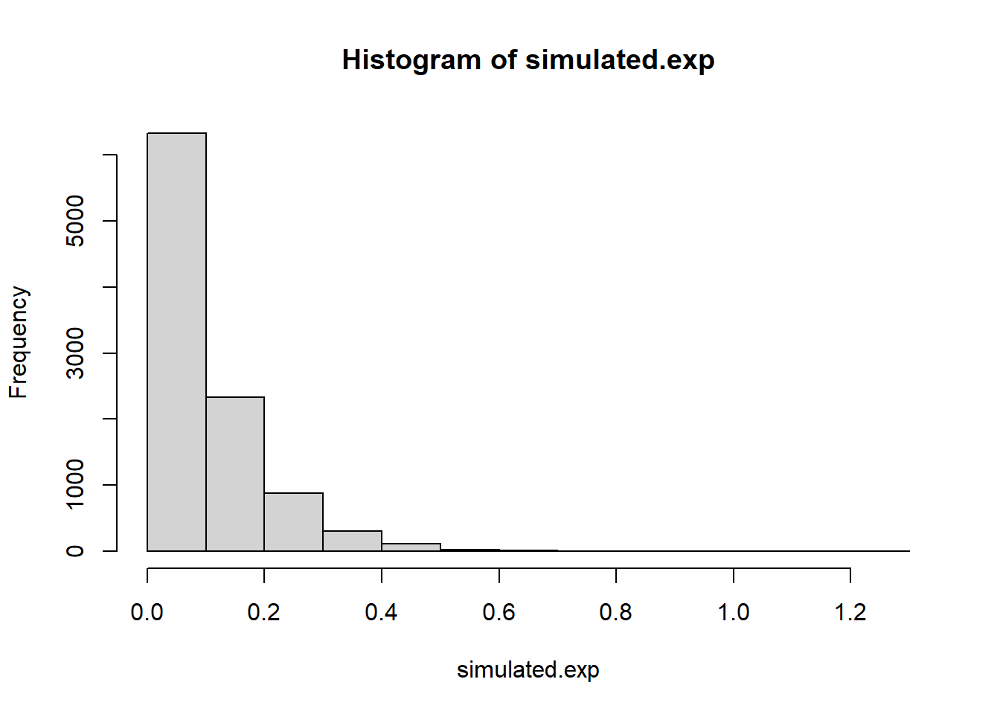
head(simulated.exp)[1] 0.25351578 0.09715050 0.20939661 0.06934131 0.17855373 0.03002709converted.poisson <- as.vector(table(floor(cumsum(simulated.exp))))
par(mfrow=c(1,2))
hist(converted.poisson)
hist(rpois(500, lambda=10))
Here’s an example of how you could combine normally distributed random variables for a model of daily stock prices. This is an example of a random walk.
deltas <- rnorm(30)
X <- 50 + c(0,cumsum(deltas))
plot(x=1:31, y=X, type="l")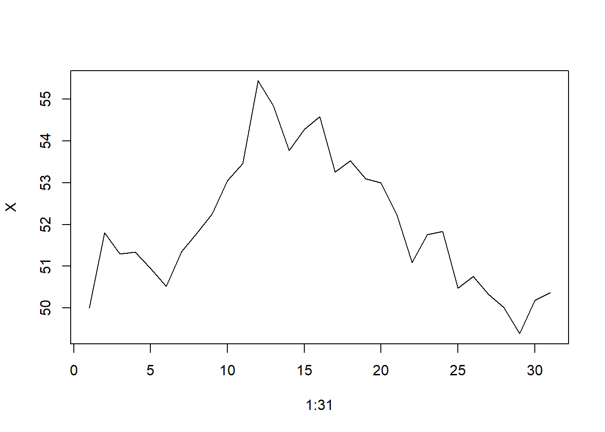